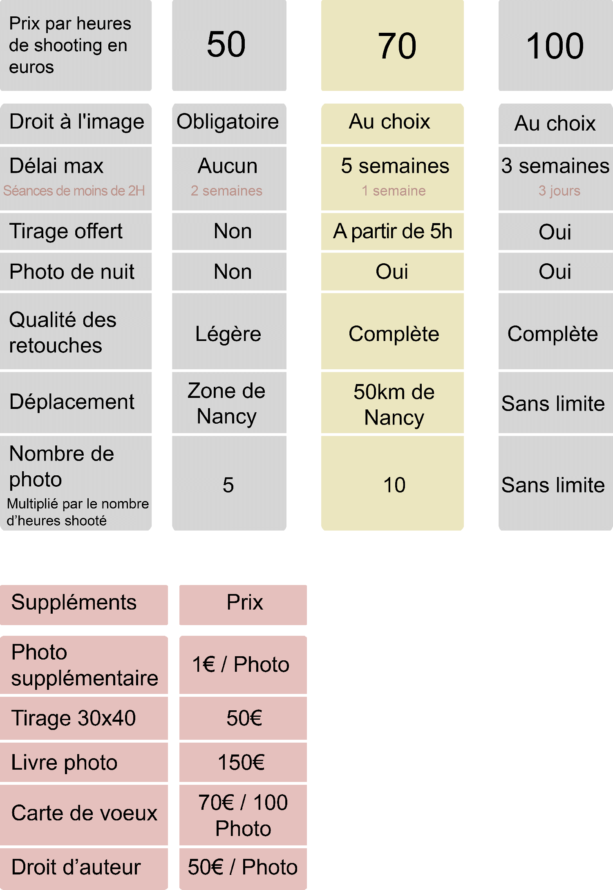

Accueil

La spontanéité dans la photographie m'a toujours attiré, j'en ai fait une des valeurs principales de mon travail, c'est de cette façon que j'aime photographier lors d'évènements notamment, j'aime mettre beaucoup d'éléments dans une photo et leur donner du sens en les faisant fonctionner ensemble dans l'espace et le temps.
Ayant pour sujet principal l'humain, je fais également beaucoup de photo de portrait, m'étant formé a la lumière artificielle mais ayant également beaucoup travaillé en lumière naturelle, j'ai développé un style à la fois minimaliste et surréaliste en jouant avec les perspectives et en donnant une grande place au ciel dans mes compositions.

street photo

Ma dernière série de photos prises lors des manifestations avant les élections : j'ai voulu montrer les relations entre les manifestants et les riverains, les motivations et les visions de chacun


Mariage
Le mariage est pour moi une évidence, c'est le lien évident entre le portrait et la photo spontanée avec en prime un sujet humain entièrement présent

l'argentique est pour moi une évidence, j'aime montrer dans mes photos une forme de fugacité


mode & portraits

Dans la photo de portrait je suis également à la recherche d'authenticité, j'essaye toujours au minimum de faire poser mes modèles, en essayant de déclencher au meilleur moment, le but étant de faire vivre l'image au travers de la personnalité du modèle, de donner une place très importante à sa personnalité, avec un décor et une esthétique en harmonie avec le sujet.


Tarifs & Suppléments
Bio

Moi c'est Merry et je suis photographe passionné depuis plusieurs années. J'ai eu beaucoup de sujet différents dans cette passion et c'est sur ce qui touche l'humain que je me sus arrêté. Je suis photographe de mode pour la friperie Alter-ego et friperie Ambre vintage, j'ai également couvert plusieurs mariages et travaille sur des projets de street-photo dans une recherche d'esthétique et de sens.
Contact
Mail : merry.joseph.blondel@gmail.com
tel : 0770069780
instagram : merry_joseph_blondel
messenger & facebook : Merry Joseph Blondel